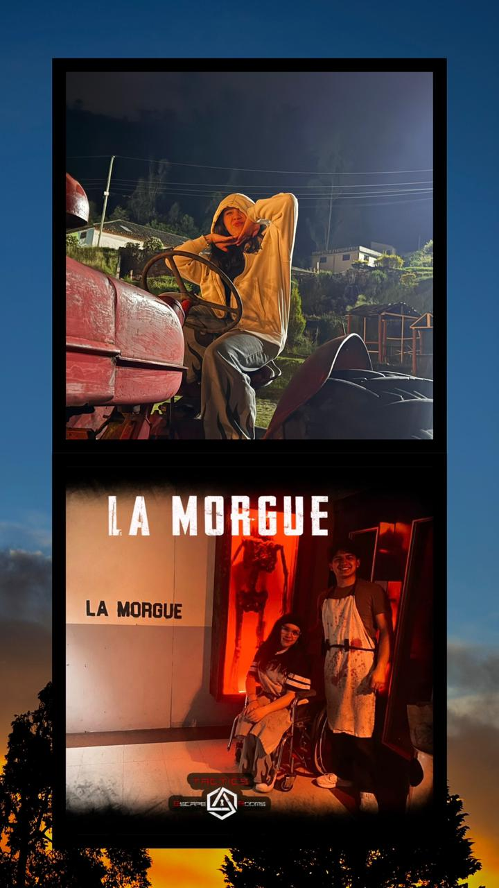
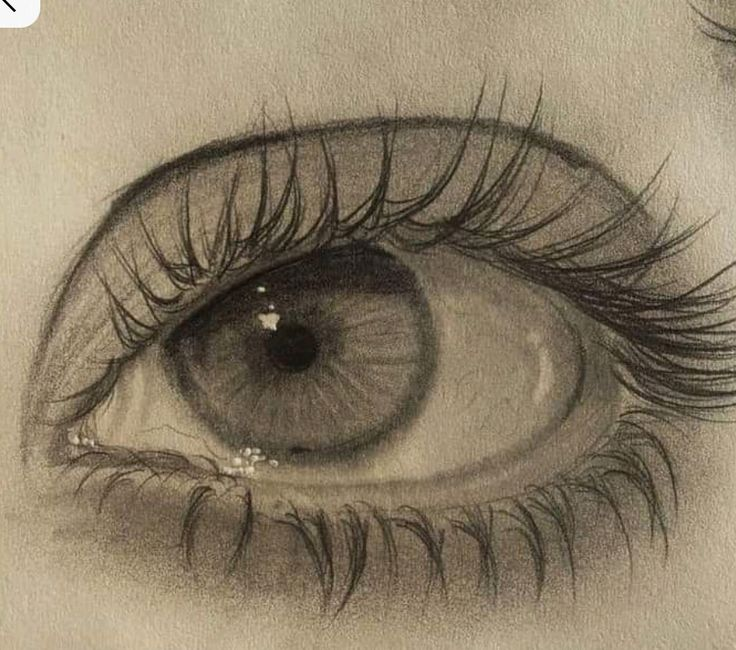
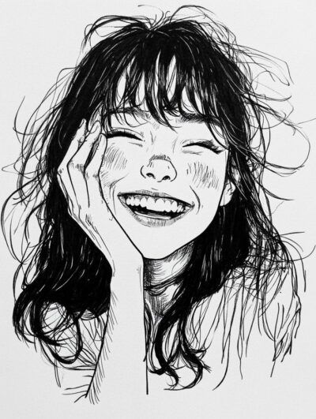
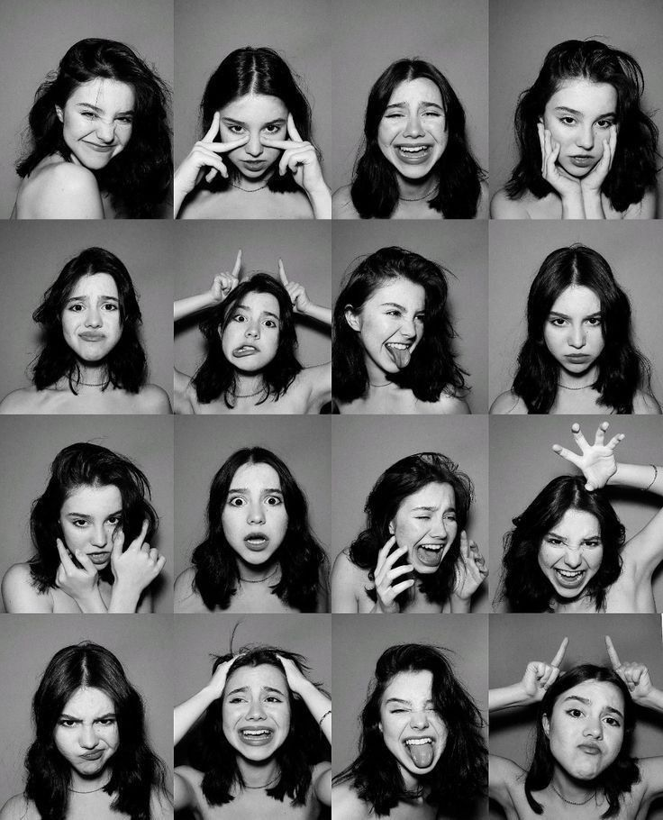
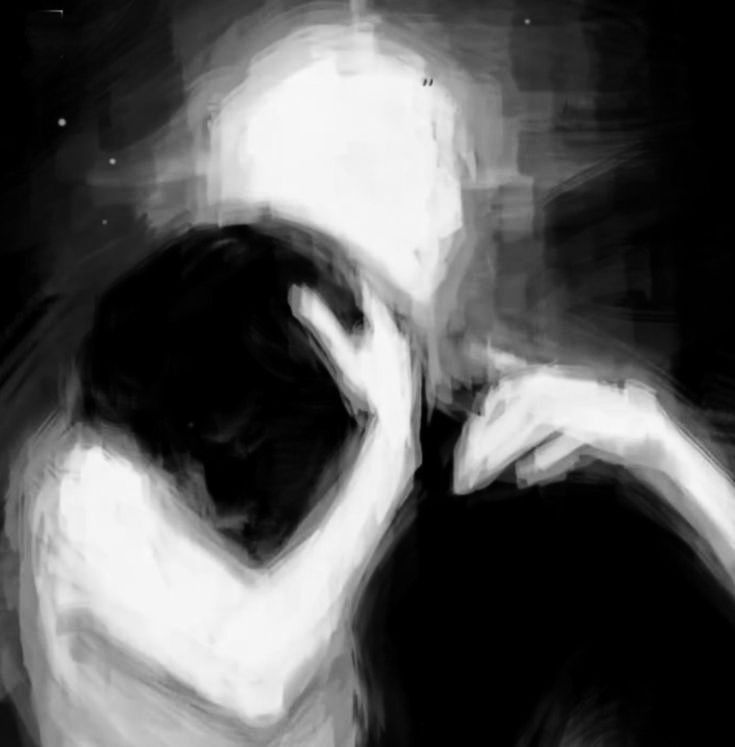

.png)
No se porque me tienes haciendo estoooo!!!
Solo quiero hacerte entender que mi corazón te pertenece.
Ya acepté que nunca voy a entender la razón de como es que pude sentir tanto en tan poco tiempo, me siento como un niño otra vez y me gusta. Me gusta sentirme vulnerable solo por ti Dome.
No sé en qué momento exacto me enamoré de ti… Fueron tantos los lugares donde compartimos momentos que se volvieron inolvidables. Hoy quiero contarte los tres lugares donde mi corazón empezó a latir diferente, donde entendí que tú valías la pena completamente.
Me empezaste a gustar cuando te empecé a acompañar en el PanchoBus, no queria nada raro, simplemente queria hablar contigo y quise aprovechar la oportunidad. Tal vez fue lo mejor que pude haber hecho.
Me enamoré de ti en esos momentos simples, cuando te acompañaba en tus clases y veía tu esfuerzo, incluso en lo más fácil. Siempre buscaba sacarte una sonrisa, y lo que me encantaba era que cualquier cosa que decia te daba gracias, para mí esos instantes fueron especiales, porque me acercaron más a ti.
Sé que el Tío Koque no es un lugar romántico, pero para mí se volvió especial porque allí compartimos momentos únicos: cuando me abrazaste llorando, cuando estuvimos solo los dos y terminamos en la biblioteca, o cuando estabamos con el Dani y terminamos buscando tu mochila en el depa de tu amiga. Sin ese lugar, quizá no habríamos vivido eso juntos, y por eso siempre tendrá un significado especial contigo.
Perdoname si es que no es perfecto, yo se que ni es mucho pero me estoy esforzando para hacerte algo especial Otra vez espero que disfrutes esto, lo hice con mucho cariño y yo solito me estoy enamorando por hacer esto.

En el campamento ocurrieron cosas que no esperaba, pero que hicieron que todo fuera especial. Pasamos la noche hablando, riendo y besándonos, y aunque no fue lo más romántico, sentí que desde ese momento nuestra conexión cambió. Cuando fuimos a la cascada, estaba pendiente de ti, cuidando que no te pasara nada. Y al llegar al río, me quedé un rato solo, pensando en por qué estaba tan atento a ti. En ese momento no encontré la respuesta… pero ahora sí la sé, y tú también la conoces.
El día del escape room fue más especial de lo que imaginé. Aunque al inicio me tuviste esperando y me dejaste con tu papá (lo cual me puso nervioso) después todo se volvió increíble. Me encantó jugar contigo, ver tu ternura cuando te asustabas en medio del puente, tu reaccion al date mi regalo, comer helado y hasta alimentar a los perritos del parque. En el escaperoom nos apoyamos mutuamente, y aunque al principio tenías miedo, tu determinacion por acabar me sorprendió. Al final, hablando en esa banca en la noche te conoci mucho mas y acompañárte a la casa de tu tía abuela (donde pase verguenza), entendí que ese día me terminé de enamorar de ti.
Cada vez que veo un atardecer pienso en ti. Eres tan bonita como cualquier cielo pintado de colores, y provocas en mí la misma sensación de calma y maravilla. Me encanta que estés presente en mi cabeza, incluso cuando no me escribes….. Malaaaaaa jajaja
La forma en que me enamoraste es algo muy especial… simplemente fuiste tú. Me mostraste quién eres de verdad, con tus luces y tus sombras, y quiero que sepas que nada de tu pasado cambia lo que siento. La persona que eres hoy, aunque no sea perfecta, para mí representa todo lo que una mujer perfecta debería ser. Me enamoraste sin que me diera cuenta: un día simplemente empezaste a gustarme, y al siguiente ya estaba enamorado de ti, Dome. Fue de repente, sí… pero eso no le quita importancia. Al contrario, lo hace único, porque nunca antes me había sentido así. Y como ya te lo dije una vez, esto es lo que realmente significa estar enamorado, y no tienes idea de lo feliz que me hace eso.
Hay muchas razones por las que me enamore de ti, pero solo te dire 4 cosas muy especiales para mi. Aunque solo nombre 4 cosas, quiero que sepas que me encanta todo de ti, pero estas 4 son especiales para mi porque fueron las primeras cosas que me encantaron de ti.

Tus ojos fueron lo primero que me llamó la atención. Tienen una luz especial que siempre me hace querer mirarlos un poco más.

Tu risa me encanta. Aunque digas que no te gusta tu sonrisa, para mí es preciosa, y quiero ser alguien que siempre te dé motivos para sonreír.

Tus gestos realmente me conquistaron desde el inicio. Hay algo en tu forma de ser que te hace ver como una princesa, con esa dulzura que te distingue.

Tu alma es lo más valioso que tienes. Es pura y auténtica, y me nace el deseo de cuidarla para que siempre brille con la misma luz, a pesar de cualquier oscuridad que quiera infectarte.